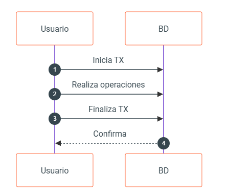
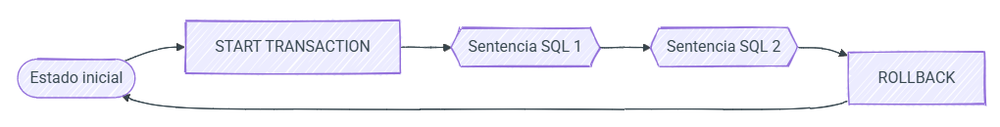
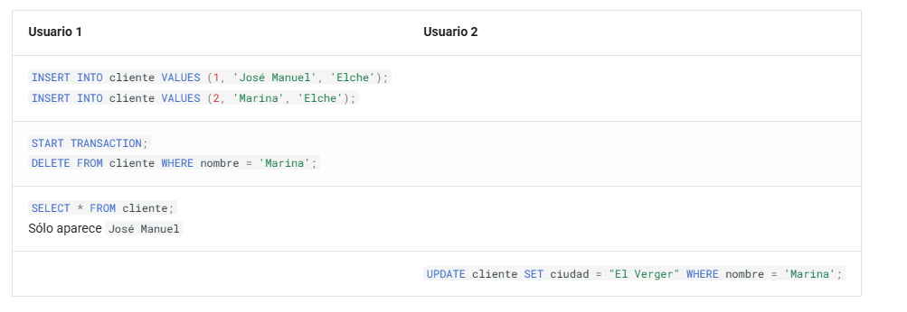

📥 UT7. SQL (DCL y TCL). Control de acceso y transacciones¶
Información de la unidad
Bases de datos relacionales:
- Usuarios. Privilegios.
- Lenguaje de control de datos (DCL).
Tratamiento de datos:
- Transacciones.
- Políticas de bloqueo. Concurrencia.
En esta unidad vamos a trabajar el RA4 "Modifica la información almacenada en una base de datos empleando asistentes, herramientas gráficas y el lenguaje de manipulación de datos."
Criterios de evaluación
- CE4e: Se ha reconocido el funcionamiento de las transacciones.
- CE4f: Se han anulado parcial o totalmente los cambios producidos por una transacción.
- CE4g: Se han identificado los efectos de las distintas políticas de bloqueo de registros.
- CE4h: Se han adoptado medidas para mantener la integridad y consistencia de la información.
Bases de datos recursos
Aquí tienes los enlaces a las bases de datos de recursos para esta unidad:
7.1 Seguridad¶
La seguridad en un SGBD es fundamental para proteger la integridad, confidencialidad y disponibilidad de la información almacenada.
Para ello, se implementan mecanismos de control de acceso mediante la gestión de usuarios y la asignación de privilegios. Este control permite definir qué operaciones puede realizar cada usuario o rol sobre los distintos objetos de la base de datos, limitando el acceso a información sensible y previniendo acciones no autorizadas.
En SQL, dentro del DCL (Data Control Language), las sentencias como GRANT y REVOKE permiten otorgar o revocar permisos de acceso y modificación sobre los datos. De esta forma, se establece un entorno seguro donde cada usuario tiene acceso únicamente a los recursos necesarios para sus funciones.
Además del control de acceso, la seguridad de un SGBD también se refuerza mediante el uso de transacciones y políticas de bloqueo y concurrencia. Las transacciones garantizan que las operaciones sobre la base de datos se ejecuten de manera atómica, consistente, aislada y duradera (propiedades ACID), lo que previene inconsistencias en caso de errores o fallos del sistema.
Para manejar el acceso concurrente de múltiples usuarios, los SGBD implementan mecanismos de bloqueo que evitan conflictos y garantizan la integridad de los datos. Estos bloqueos, combinados con estrategias de control de concurrencia, aseguran que las transacciones se gestionen de forma ordenada y segura, minimizando riesgos como condiciones de carrera, lecturas sucias o actualizaciones perdidas. Todo esto contribuye a mantener la coherencia y fiabilidad de la base de datos frente a accesos simultáneos y posibles fallos.
Uso de contraseñas¶
Independientemente de la gestión de seguridad de los SGBD, las aplicaciones que desarrollemos normalmente utilizarán una base de datos donde se almacene la contraseña de los usuarios. Ni que decir tiene que almacenar las contraseñas en texto plano es un agujero de seguridad, ya que si la base de datos se compromete, las contraseñas de todos los usuarios quedarán expuestas.
Una forma de proteger las contraseñas es almacenarlas encriptadas, de manera que aunque la base de datos se vea comprometida, los atacantes no podrán recuperar las contraseñas originales. Para ello, se emplean algoritmos de encriptación hash que generan un valor único e irreversible a partir de la contraseña original.
Un ejemplo de tabla de usuarios con contraseñas encriptadas podría ser la siguiente:
CREATE TABLE usuarios (
id INT AUTO_INCREMENT PRIMARY KEY,
username VARCHAR(50) UNIQUE NOT NULL,
email VARCHAR(255) UNIQUE NOT NULL,
password_hash VARCHAR(255) NOT NULL,
salt VARCHAR(255),
created_at TIMESTAMP DEFAULT CURRENT_TIMESTAMP,
updated_at TIMESTAMP DEFAULT CURRENT_TIMESTAMP ON UPDATE CURRENT_TIMESTAMP,
esta_activo BOOLEAN DEFAULT TRUE
);
Conviene explicar el propósito del campo salt. El salt es un valor aleatorio único que se añade a cada contraseña antes del proceso de hashing. Su propósito es hacer que cada hash sea único, incluso para contraseñas idénticas. Mediante su uso, dos usuarios que tengan la misma contraseña tendrán almacenado diferente password_hash. Para ello, usaremos primero la función hash MD5 para crear una cadena aleatoria.
A continuación, cuando insertemos un nuevo usuario, tras concatenar la contraseña con el salt, debemos encriptar el resultado mediante la función hash SHA2:
-- Generar salt aleatorio
SET @salt = SUBSTRING(MD5(RAND()) FROM 1 FOR 16);
-- Insertar usuario con hash SHA256 + salt
INSERT INTO usuarios (username, email, password_hash, salt)
VALUES (
'usuario1',
'user@email.com',
SHA2(CONCAT('mi_password', @salt), 256),
@salt
);
Por lo tanto, cuando queramos recuperar un usuario que ha hecho login en la aplicación, necesitamos volver a concatenar la contraseña con el salt, realizar el hash y finalmente, comparar las dos cadenas encriptadas:
SELECT * FROM usuarios
WHERE username = 'usuario1'
AND password_hash = SHA2(CONCAT('mi_password', salt), 256);
Dicho esto, los algoritmos MD5 y SHA2, a día de hoy, están obsoletos (se consideran criptográficamente rotos o son fácilmente hackeables por fuerza bruta), y por ello, en vez de basarse en las funciones de encriptación que ofrece el SGBD, es mejor hacer uso de los algoritmos bcrypt, scrypt o argon2 desde el lenguaje de programación que utilice el SGBD, ya sea Java, PHP o Python.
7.2 DCL¶
El Data Control Language (DCL - Lenguaje de control de datos) se emplea para gestionar los permisos y privilegios de acceso a los objetos dentro de una base de datos, estableciendo políticas de seguridad que determinan qué usuarios o roles pueden interactuar con los datos y de qué manera.
A través del DCL, los administradores de bases de datos pueden otorgar o revocar permisos, asegurando que cada usuario solo pueda realizar las acciones que le han sido expresamente autorizadas. Este control es esencial para proteger la información sensible, evitar accesos no autorizados y mantener la integridad de los datos.
Usuarios¶
Así pues, el primer paso es la creación de usuarios y sus credenciales.
SQL proporciona comandos específicos para crear, modificar y eliminar usuarios, aunque la sintaxis puede variar ligeramente según el SGBD (como MariaDB, PostgreSQL u Oracle).
Para crear un nuevo usuario se realiza con la sentencia CREATE USER, mediante la sintaxis
Al indicar la contraseña, esta se encriptará con un hash mediante el algoritmo mysql_native_password. El hash es irreversible, lo que significa que no se puede recuperar la contraseña original a partir de él.
Además, en MariaDB, podemos especificar el host desde donde se permite la conexión:
Necesitamos crear un usuario para poder trabajar con la base de datos. Por lo tanto, crearemos un usuario con el nombre user01 y la contraseña 1234.
Usuarios existentes
Para averiguar qué usuarios existen en el sistema, en MariaDB debemos hacer una consulta sobre la tabla mysql.user:
SELECT host, user, password FROM mysql.user;
-- +-----------+-------------+-------------------------------------------+
-- | Host | User | Password |
-- +-----------+-------------+-------------------------------------------+
-- | localhost | mariadb.sys | |
-- | localhost | root | *81F5E21E35407D884A6CD4A731AEBFB6AF209E1B |
-- | 127.0.0.1 | healthcheck | *E6203A3A57998AFD011DDBF30FB411FC065F318C |
-- | ::1 | healthcheck | *E6203A3A57998AFD011DDBF30FB411FC065F318C |
-- | localhost | healthcheck | *E6203A3A57998AFD011DDBF30FB411FC065F318C |
-- | % | user01 | *3D3F19386045EE9D580D9527B41DF893A95325B7 |
-- +-----------+-------------+-------------------------------------------+
-- 7 rows in set (0.001 sec)
La columna host indica desde dónde nos podemos conectar a la base de datos, de manera que mediante root sólo nos podemos conectar desde la propia máquina (localhost), mientras que los usuarios s8a y s8abd pueden conectarse desde cualquier lugar (% hace la función de comodín).
Si hubiéramos querido que nuestro usuario sólo pudiera conectarse desde localhost (o cualquier otro host), hemos de indicarlo mediante nombre_usuario@host:
Si necesitamos cambiar la contraseña o actualizar las propiedades de un usuario existente, utilizaremos la instrucción ALTER USER, con la sintaxis:
También se pueden modificar atributos adicionales, como el límite de conexiones o configuraciones de autenticación.
Finalmente, para eliminar usuarios utilizaremos la sentencia DROP USER, revocando todos sus privilegios y eliminando su acceso a la base de datos.
Es recomendable revocar previamente los permisos asignados para asegurar una gestión ordenada.
Permisos¶
Hemos comentado previamente que los usuarios tendrán diferentes permisos sobre los recursos de una base de datos. Para ello, las principales sentencias del DCL son GRANT y REVOKE.
La instrucción GRANT permite asignar permisos específicos a usuarios o roles, como la capacidad de consultar (SELECT), insertar (INSERT), actualizar (UPDATE) o eliminar (DELETE) datos en tablas o vistas. También se pueden otorgar privilegios sobre procedimientos almacenados o esquemas completos.
Por otro lado, la sentencia REVOKE se utiliza para retirar esos permisos cuando ya no son necesarios o cuando se detecta un posible riesgo de seguridad.
Además, algunos sistemas permiten incluir la opción WITH GRANT OPTION, que autoriza a un usuario a conceder los privilegios que ha recibido a otros usuarios. Esta gestión granular de permisos es clave para implementar políticas de seguridad robustas, evitando accesos indebidos y minimizando el riesgo de errores o ataques malintencionados.
Comprobando permisos
¿Cómo puedo saber los permisos que tengo? Para ello, necesitamos ejecutar el comando SHOW GRANTS:
SHOW GRANTS for CURRENT_USER;
-- +---------------------------------------------------------------------+
-- | Grants for root@% |
-- +---------------------------------------------------------------------+
-- | GRANT ALL PRIVILEGES ON *.* TO `root`@`%` WITH GRANT OPTION |
-- +---------------------------------------------------------------------+
-- 1 row in set (0.001 sec)
En cambio, si comprobamos los permisos del usuario que hemos creado en esta sesión:
SHOW GRANTS for user01;
-- +---------------------------------------------------------------------+
-- | Grants for user01@% |
-- +---------------------------------------------------------------------+
-- | GRANT USAGE ON *.* TO `user01`@`%` IDENTIFIED BY PASSWORD '*DF...FD' |
-- +---------------------------------------------------------------------+
-- 1 row in set (0.003 sec)
Tras crear un usuario, es necesario asignar permisos mediante el DCL con GRANT y retirarlos con REVOKE.
Otorgando permisos¶
Así pues, mediante la sentencia GRANT daremos privilegios a un usuario sobre uno o más objetos, mediante la siguiente sintaxis:
Los posibles privilegios (los cuales podemos consultar con el comando SHOW PRIVILEGES) más comunes son:
USAGE: permite que el usuario exista y se conecte, pero sin ningún permiso de acceso a datos.SELECT: para acceder a tablas o vistas.INSERT[(nombre_columna)]:Si se especifica elnombre_columna, se otorga permiso para insertar en la columna especificada. Si se omite, se permite insertar valores en todas las columnas.UPDATE[(nombre_columna)]: Lo mismo queINSERTpara modificar.DELETE: para eliminar registros de una tabla o vista.GRANT OPTION: permite dar permisos a otro usuario.ALL: otorga todos los permisos menosGRANT OPTION.
Y para indicar el recurso se emplea la nomenclatura bd.recurso, siendo recurso una tabla, vista, etc...
Por ejemplo, si nos conectamos con el usuario root el cual sí que tiene permisos para dar privilegios, podemos hacer:
Si nos conectamos con ese nuevo usuario, y accedemos a la base de datos de techstore, podemos ver que sólo puede ver la tabla clientes :
USE techstore;
SHOW TABLES;
-- +------------------+
-- | Tables_in_techstore |
-- +------------------+
-- | clientes |
-- +------------------+
-- 1 row in set (0.000 sec)
Finalmente, si queremos dar permisos de administración a un usuario haremos:
Si queremos que los usuarios que creamos puedan dar permisos a futuros usuarios, necesitamos indicarlo con WITH GRANT OPTION:
Así pues, si quisiéramos crear un nuevo usuario administrador que pueda hacer de todo, e incluso dar nuevos permisos, haríamos:
CREATE USER administrador@localhost IDENTIFIED BY 'admin';
GRANT ALL PRIVILEGES ON *.* TO administrador@localhost WITH GRANT OPTION;
Consejos seguridad
Una gestión adecuada de usuarios implica también definir roles, agrupar permisos y establecer políticas de acceso según los principios de mínimos privilegios, donde cada usuario tiene solo los permisos estrictamente necesarios.
Quitando permisos¶
Si en algún momento tenemos que quitarle permisos a un usuario, podemos revocar los privilegios sobre un objeto mediante el comando REVOKE, con la siguiente sintaxis:
Así pues, si queremos quitarle el permiso de inserción que antes le habíamos dado al usuario user01 haríamos:
FLUSH PRIVILEGES
El comando FLUSH PRIVILEGES se utiliza para recargar los privilegios en memoria después de realizar cambios en las tablas de privilegios del sistema, y los cambios tengan efecto inmediato.
Cuando utilizamos los comandos del DCL (GRANT, REVOKE, CREATE USER, DROP USER, ALTER USER), MariaDB actualiza automáticamente los privilegios en memoria. Por tanto, en un uso normal no es necesario ejecutar FLUSH PRIVILEGES.
Sin embargo, si en algún caso modificamos directamente las tablas internas del sistema (como mysql.user) mediante sentencias DML, el servidor no detecta el cambio automáticamente. En ese caso, debemos ejecutar:
Roles¶
Si queremos aplicarle los mismos permisos a varios usuarios, podemos hacer uso de los roles. Formalmente, un rol es un conjunto de privilegios que se pueden asignar a uno o más usuarios. Mediante los roles, se simplifica la gestión de permisos, ya que en lugar de asignar privilegios individualmente a cada usuario, se pueden agrupar en un rol y luego asignar ese rol a los usuarios correspondientes.
Para ello, usaremos la sentencia CREATE ROLE, por ejemplo, para crear un rol desarrollador
Una vez creado un rol, le daremos permisos mediante GRANT o se los quitaremos mediante REVOKE, y finalmente le asignaremos el rol a uno o más usuarios mediante GRANT rol TO usuario.
-- Damos permisos al rol desarrollador sobre la base de datos techstore
GRANT ALL ON techstore.* TO desarrollador;
-- Asignamos el rol desarrollador al usuario user01
GRANT desarrollador TO user01;
Si ahora recuperamos los permisos del usuario user01 veremos que tiene asociado el rol desarrollador:
SHOW GRANTS for user01;
-- +--------------------------------------------------------------------+
-- | Grants for user01@% |
-- +--------------------------------------------------------------------+
-- | GRANT `desarrollador` TO `user01`@`%` |
-- | GRANT USAGE ON *.* TO `user01`@`%` IDENTIFIED BY PASSWORD '*D...FD' |
-- +--------------------------------------------------------------------+
-- 2 rows in set (0.000 sec)
Y si recuperamos la info del rol tendremos:
SHOW GRANTS for desarrollador;
-- +--------------------------------------------------------+
-- | Grants for desarrollador |
-- +--------------------------------------------------------+
-- | GRANT USAGE ON *.* TO `desarrollador` |
-- | GRANT ALL PRIVILEGES ON `empresa`.* TO `desarrollador` |
-- +--------------------------------------------------------+
-- 2 rows in set (0.001 sec)
En cambio, si queremos quitarle el rol a un usuario, usaremos REVOKE rol FROM usuario.
Por último, si queremos eliminar un rol usaremos DROP ROLE:
Más información en la documentación oficial de MariaDB.
7.3 Transacciones¶
Una transacción es una unidad lógica de trabajo que comprende una o más sentencias SQL. Para que una base de datos sea fiable, las transacciones deben garantizar cuatro propiedades fundamentales, conocidas por el acrónimo ACID.
Propiedades ACID¶
| Propiedad | Descripción |
|---|---|
| Atomicidad | La transacción es una unidad única de "todo o nada". Si una parte falla, toda la transacción falla y la base de datos vuelve a su estado original (ROLLBACK). |
| Consistencia | Una transacción lleva a la base de datos de un estado válido a otro estado válido, respetando todas las reglas, restricciones de integridad y triggers. |
| Islamiento | Las transacciones que se ejecutan simultáneamente no deben interferir entre sí. Los cambios de una transacción no son visibles para otras hasta que se confirman. |
| Durabilidad | Una vez que una transacción ha sido confirmada (COMMIT), los cambios son permanentes y persistirán incluso en caso de fallo del sistema o corte eléctrico. |
Los pasos a la hora de realizar una transacción se resumen en:
- Iniciar la transacción
- Realizar las operaciones
- Finalizar la transacción
- Confirmar el resultado
{kind=link}

Comandos de Control¶
En SQL, gestionamos las transacciones mediante los siguientes comandos:
START TRANSACTION(oBEGIN): Marca el punto de inicio de una unidad de trabajo. A partir de aquí, el Autocommit se desactiva.COMMIT: Guarda permanentemente todos los cambios realizados durante la transacción actual.ROLLBACK: Deshace todos los cambios realizados desde el inicio de la transacción, devolviendo los datos a su estado original.SAVEPOINT nombre: Crea un "punto de control" dentro de una transacción larga. Permite deshacer solo una parte de la transacción sin abortarla entera.ROLLBACK TO SAVEPOINT nombre: Vuelve al punto de control indicado.
🏟️ Ejemplo de integridad: Fichaje de un jugador¶
Imagina que el Equipo A ficha a un jugador del Equipo B por 500.000€. Esta operación requiere tres pasos atómicos:
- Restar 500.000€ al presupuesto del Equipo A.
- Sumar 500.000€ al presupuesto del Equipo B.
- Cambiar el
equipoIDdel jugador.
Si el sistema falla tras el paso 1, el dinero "desaparecería". Usamos transacciones para evitarlo:
START TRANSACTION;
-- Paso 1: Pago del equipo destino
UPDATE Equipo SET presupuesto = presupuesto - 500000 WHERE codigo = 'EQ_A';
-- Paso 2: Cobro del equipo origen
UPDATE Equipo SET presupuesto = presupuesto + 500000 WHERE codigo = 'EQ_B';
-- Creamos un punto de seguridad por si el cambio de jugador falla
SAVEPOINT antes_de_jugador;
-- Paso 3: Cambio de club del jugador
UPDATE Jugador SET equipoID = (SELECT id FROM Equipo WHERE codigo = 'EQ_A')
WHERE nombre = 'Leo' AND apellido = 'Messi';
-- Verificamos si todo ha ido bien
-- Si el jugador no existiera o hubiera un error de integridad:
-- ROLLBACK TO SAVEPOINT antes_de_jugador; -- Podríamos intentar corregirlo
-- Si todo es correcto, guardamos:
COMMIT;
Transacciones e Integridad Referencial
Las transacciones son nuestra última línea de defensa. Aunque las claves ajenas (FOREIGN KEY) evitan datos huérfanos, solo las transacciones aseguran que operaciones complejas que afectan a varias filas (como la transferencia de fondos anterior) sean consistentes.
Autocommit: El comportamiento por defecto¶
Por defecto, MySQL y MariaDB operan en modo Autocommit = 1. Esto significa que cada sentencia individual (INSERT, UPDATE, DELETE) es tratada como una transacción completa que se confirma automáticamente al terminar.
Para realizar transacciones de varias líneas, tenemos dos opciones:
- Usar explícitamente
START TRANSACTION(desactiva el autocommit solo para ese bloque), lo que nos permite hacerCOMMIToROLLBACK. - Desactivar el autocommit globalmente con
SET autocommit = 0;(peligroso en entornos de producción si se olvida hacerCOMMIT). - Si necesitamos volver a activar el autocommit globalmente, usamos
SET autocommit = 1;.
Pasos¶
Aunque el autocommit esté activo, es posible realizar transacciones explícitas, y realmente, es la forma recomendada de trabajar, ya que nos permite controlar mejor el proceso. Para ello, para realizar una transacción, tal como hemos visto previamente, el primer paso es iniciarla y ejecutar una serie de operaciones:
- Indicar que vamos a realizar una transacción con la sentencia
START TRANSACTION( oBEGIN,BEGIN WORK, que siendo comandos equivalentes, se mantienen por compatibilidad con otros sistemas como PostgreSQL). Al iniciar la transacción, elAUTOCOMMITse deshabilita automáticamente. - Realizar las operaciones de manipulación de datos sobre la base datos (insertar, actualizar o borrar filas).
-
Dos posibilidades:
-
Si las operaciones se han completado y queremos que los cambios se apliquen de forma permanente →
COMMITPasos de una transacción con COMMIT -
Si durante las operaciones ocurre algún error y no queremos aplicar los cambios realizados, podemos deshacerlos →
ROLLBACK. Al hacer rollback se abandona la transacción y se cancelan todos los cambios realizados previamente por la transacción, volviendo al estado inicial previo al inicio de la transacción.

Pasos de una transacción con ROLLBACK -
{kind=link}
{kind=link}
Veamos un ejemplo donde creamos una base de datos pruebas, junto a una tabla cliente:
DROP DATABASE IF EXISTS pruebas;
CREATE DATABASE pruebas CHARACTER SET utf8mb4;
USE pruebas;
CREATE TABLE cliente (
id INT UNSIGNED PRIMARY KEY,
nombre VARCHAR (32),
ciudad VARCHAR (32)
);
A continuación, podemos realizar diferentes operaciones dentro de una única transacción:
START TRANSACTION;
INSERT INTO cliente VALUES (1, 'Andreu', 'Elche');
INSERT INTO cliente VALUES (2, 'Marina', 'Elche');
INSERT INTO cliente VALUES (33, 'Pedro', 'Elche');
DELETE FROM cliente WHERE nombre = 'Andreu';
COMMIT;
De esta manera, las tres inserciones y el borrado se ejecutan como una única operación. Si abrimos dos terminales y entramos con dos sesiones diferentes, y ejecutamos el siguiente flujo, obtendremos:
| Usuario 1 | Resultado 1 | Usuario 2 | Resultado 2 |
|---|---|---|---|
START TRANSACTION;INSERT INTO cliente VALUES (1, 'Andreu', 'Elche');INSERT INTO cliente VALUES (2, 'Marina', 'Elche'); |
|||
SELECT * FROM CLIENTE; |
1, Andreu, Elche2, Marina, Elche |
SELECT * FROM CLIENTE; |
- |
INSERT INTO cliente VALUES (33, 'Pedro', 'Elche');DELETE FROM cliente WHERE nombre = 'Andreu';COMMIT; |
|||
SELECT * FROM CLIENTE; |
2, Marina, Elche33, Pedro, Elche |
SELECT * FROM CLIENTE; |
2, Marina, Elche33, Pedro, Elche |
Puntos de parada¶
Los puntos de parada definen puntos de control intermedios dentro de una transacción, de forma que si se efectúa ROLLBACK éste pueda ser total (toda la transacción) o hasta uno de los puntos de control de la transacción.
Para ello, primero los definiremos mediante la etiqueta SAVEPOINT dentro de una transacción.
Posteriormente, al ocurrir un error, podemos indicar que realice un ROLLBACK TO [SAVEPOINT] etiqueta, deshaciendo sólo las instrucciones que se han ejecutado hasta el punto de parada indicado.
Si queremos eliminar un punto de parada, necesitaremos hacerlo mediante RELEASE SAVEPOINT etiqueta
START TRANSACTION;
INSERT INTO cliente VALUES(1, 'José Manuel', 'Elche');
SAVEPOINT P1;
INSERT INTO cliente VALUES(2, 'Marina', 'Elche');
SAVEPOINT P2;
INSERT INTO cliente VALUES(3, 'Andreu', 'Elche');
-- Recuperamos los clientes que acabamos de insertar
SELECT * FROM cliente;
ROLLBACK TO P1; -- Deshace los insert de Marina y Andreu
SELECT * FROM cliente; -- Mostrará solo José Manuel
ROLLBACK TO P2; -- Dará error porque al haber hecho ROLLBACK a un punto de control anterior desaparece P2
COMMIT; -- Sólo quedará guardado José Manuel
7.4 Concurrencia¶
En el contexto de bases de datos, el término concurrencia se refiere a la capacidad de un sistema de bases de datos para permitir que múltiples usuarios o procesos accedan y manipulen los datos al mismo tiempo, sin que esto afecte a la integridad, consistencia o el rendimiento del sistema.
Cuando se utilizan transacciones, pueden darse problemas de concurrencia en el acceso a los datos, es decir, problemas ocasionados por el acceso al mismo dato de dos transacciones distintas. Cuando diferentes usuarios realizan cambios en el mismo recurso de una base de datos al mismo tiempo se produce un bloqueo.
Un caso de uso muy común es la compra de entradas para eventos (cine, teatro, conciertos,...) donde en un primer paso se selecciona el asiento y posteriormente se realiza la operación. Cuando un usuario selecciona un asiento, éste se bloquea para que ningún usuario pueda adquirirlo, pero ¿y si dos usuarios seleccionan el mismo asiento, pero uno es más rápido que el otro a la hora de confirmar la compra?
Pensemos en otro ejemplo. Cuando realizamos un bizum o una transferencia bancaria entre dos usuarios, la cantidad se resta de la cuenta bancaria de origen y se suma en la de destino. Entre una operación y otra pueden pasar muchas cosas ¿Y si se va la luz? ¿Y si el usuario origen no tiene saldo? ¿Restamos y luego sumamos?
La gestión de la concurrencia es un equilibrio entre garantizar la seguridad de los datos y maximizar el rendimiento del sistema.
Tipos de problemas
Cuando consultamos una base de datos, cada transacción ve una instantánea de los datos, es decir, una versión de la base de datos, sin tener en cuenta el estado actual de los datos que hay por debajo. Así se evita que la transacción vea datos inconsistentes producidos por la actualización de otra transacción concurrente, proporcionando aislamiento transaccional para cada sesión de la base de datos.
Cuando no tenemos control de concurrencia, se pueden producir condiciones de carrera al perder información en una actualización:
Condición de carrera
Condición de carrera (Lost Update) : Se producen errores o inconsistencias cuando dos procesos intentan modificar los mismos datos simultáneamente.
El usuario 1 comprueba los asientos disponibles, y también lo hace el usuario 2. Ambos ven que el asiento 33 está libre, y al mismo tiempo, inician el proceso de reserva.
La operación que llega al sistema primero se ejecuta, pero como no hay control de concurrencia, la segunda operación también se ejecuta, sobrescribiendo el resultado de la primera, y de ahí el término 'condición de carrera'.
| Usuario 1 | Usuario 2 |
|---|---|
SELECT estado FROM asientos WHERE num = 33; |
|
SELECT estado FROM asientos WHERE num = 33; |
|
UPDATE asientos SET estado = "ocupado" WHERE num = 33 and usuario = 1; |
UPDATE asientos SET estado = "ocupado" WHERE num = 33 and usuario = 2; |
La solución es introducir transacciones e incluir la lectura dentro de la transacción.
Si introducimos transacciones para evitar las condiciones de carrera, aparecen otro tipo de problemas:
- Lectura no repetible
- Lectura sucia
- Lectura fantasma
Lectura no repetible
Se produce cuando en una transacción se consulta el mismo dato dos veces, y la segunda vez encuentra que el valor del dato ha sido modificado por otra transacción.
El usuario 1 consulta el estado de los asientos y comprueba que el asiento 33 está libre. Mientras tanto el usuario 2, reserva dicho asiento, y cuando el usuario 1 vuelve a confirmar el asiento para realizar la reserva le aparece que está ocupado.
| Usuario 1 | Usuario 2 |
|---|---|
START TRANSACTION;SELECT estado FROM asientos WHERE num = 33; |
|
UPDATE asientos SET estado = "ocupado" WHERE num = 33;COMMIT; |
|
SELECT estado FROM asientos WHERE num = 33; |
Lectura sucia (Dirty Read)
Sucede cuando una segunda transacción lee datos que están siendo modificados por una transacción antes de que haga COMMIT.
El usuario 1 reserva el asiento, que queda marcado como ocupado, pero sin realizar el COMMIT. El usuario 2 comprueba su estado y aparece como ocupado, y tras ello, el usuario 1 cancela la reserva, liberando un asiento que realmente no ha llegado a estar ocupado.
| Usuario 1 | Usuario 2 |
|---|---|
START TRANSACTION;UPDATE asientos SET estado = "ocupado" WHERE num = 33; |
|
SELECT estado FROM asientos WHERE num = 33; |
|
ROLLBACK; |
Lectura fantasma (Phantom Read)
Se trata de una variación de lecturas no repetibles. Este error ocurre cuando una transacción ejecuta dos veces una consulta que devuelve un conjunto de filas y en la segunda ejecución de la consulta aparecen/desaparecen nuevas filas en el conjunto que no existían cuando se inició la transacción.
El usuario 1 comprueba los asientos disponibles. A la vez, el usuario 2 elimina el asiento 33 ya que se ha roto y no debe aparecer entre los asientos existentes. Cuando el usuario 1 vuelve a comprobar los asientos existentes, comprueba su estado y el asiento no aparece, cuando antes sí aparecía (de ahí que sea una lectura fantasma).
| Usuario 1 | Usuario 2 |
|---|---|
SELECT num FROM asientos WHERE estado = "libre"; |
|
DELETE FROM asientos WHERE num = 33;COMMIT; |
|
SELECT num FROM asientos WHERE estado = "libre"; |
Mecanismos de control de concurrencia¶
Los sistemas gestores de bases de datos (SGBD) implementan diferentes técnicas para garantizar la consistencia y aislamiento de las transacciones:
- Control de concurrencia mediante bloqueos (Locks). Los bloqueos son mecanismos que previenen conflictos entre las transacciones que acceden a los mismos recursos, bien sea a estructuras de datos compartidas o a un registro del diccionario de datos.
- Versionado de datos (MVCC, Multi-Version Concurrency Control): Permite que cada transacción trabaje con su propia copia de los datos, evitando bloqueos y mejorando el rendimiento en sistemas con alta concurrencia. Cuando hay una modificación de datos, en lugar de sobrescribir una fila en actualizaciones, se almacena una nueva versión de la fila mientras se mantiene la versión anterior hasta que ya no sea necesaria (las transacciones que la usan han finalizado). Las versiones anteriores de una fila se almacenan en el espacio de "deshacer" (undo space) para permitir transacciones y lecturas consistentes.
- Protocolos de serialización: Garantizan que las transacciones se ejecuten de manera que los resultados sean equivalentes a ejecutarlas en secuencia, evitando interferencias.
- Niveles de aislamiento: Establecen reglas sobre cómo se gestionan las interacciones entre transacciones (
READ UNCOMMITTED,READ COMMITTED,REPEATABLE READ,SERIALIZABLE) para dar solución a los problemas de concurrencia comentados anteriormente.
Bloqueos¶
Cuando un SGBD aísla las transacciones de usuario, utiliza los bloqueos para restringir el acceso de otros usuarios a dichos datos.
Los bloqueos pueden ser:
- Compartidos (Shared): Permiten que varios procesos lean los mismos datos, pero no los modifiquen. Múltiples usuarios leyendo datos pueden compartirlos, manteniendo bloqueos para prevenir accesos concurrentes por una escritura.
- Exclusivos (Exclusive): Restringen el acceso a los datos a un solo proceso para lecturas y escrituras. La primera transacción que bloquea el recurso es la única que puede alterarlo hasta liberar el bloqueo.
Cuando se produce una condición de carrera, dependiendo del nivel de aislamiento, el SGBD actuará de una manera u otra, lo que impacta directamente en el rendimiento y la cantidad de bloqueos necesarios.
Si retomamos el ejemplo de los clientes y tenemos dos usuarios que trabajan sobre los mismos datos, y un usuario en una transacción modifica un registro, y no termina de hacer commit ni rollback, cuando un segundo usuario intenta acceder al mismo registro, se producirá un bloqueo:
{kind=link}

En esta situación, el usuario 2 se queda «congelado» esperando a que el usuario 1 termine su transacción. Si tarda demasiado sin que se libere el bloqueo, el SGBD lanzará el siguiente error:
ERROR 1205 (HY000): Lock wait timeout exceeded; try restarting transaction
Rendimiento vs Seguridad
Aumentar el número de bloqueos mejora la seguridad y consistencia de los datos, pero a cambio disminuye la concurrencia (menos usuarios pueden trabajar a la vez). Es clave encontrar un equilibrio para que la aplicación no se ralentice.
Gestión explícita de bloqueos¶
Aunque el SGBD gestiona los bloqueos automáticamente para protegernos, a veces necesitamos forzarlos de forma manual en procesos críticos.
1. Bloqueo de filas (FOR UPDATE)¶
Imagina que estás vendiendo asientos para un concierto. Quieres estar seguro de que, mientras un usuario está eligiendo su butaca, nadie más pueda "quitársela".
Al añadir FOR UPDATE al final de una consulta SELECT, bloqueas esas filas para que nadie más pueda modificarlas ni borrarlas hasta que finalices tu transacción:
START TRANSACTION;
-- Bloqueamos a los empleados sin hijos para actualizarlos próximamente
SELECT CodEmp FROM empleado WHERE NumHi = 0 FOR UPDATE;
- ¿Qué sucede? Cualquier otra sesión que intente modificar (
UPDATEoDELETE) a esos empleados tendrá que esperar a que tú hagasCOMMIToROLLBACK. - Dato clave: Los demás usuarios sí podrán leer los datos (
SELECT), pero no podrán cambiarlos hasta que el bloqueo se libere.
2. Bloqueo de tablas (LOCK TABLES)¶
Si necesitamos un control total y exclusivo sobre una tabla completa (por ejemplo, para realizar cambios masivos), usamos LOCK TABLE.
Existen dos tipos principales de bloqueo:
| Tipo | ¿Quién puede leer? | ¿Quién puede escribir? | Uso común |
|---|---|---|---|
READ |
Todos (tú y los demás) | Nadie | Generación de informes sin cambios de datos. |
WRITE |
Solo tú | Solo tú | Modificaciones masivas de estructura o datos. |
Efectos de LOCK TABLES
Al ejecutar LOCK TABLES se hace un COMMIT automático de cualquier transacción pendiente. Las tablas se desbloquean automáticamente si cierras la conexión, pero lo correcto es hacerlo manualmente con UNLOCK TABLES.
-
Sintaxis y ejemplo:
-
Cómo liberar los bloqueos: Una vez terminado el trabajo, siempre debemos soltar el bloqueo para permitir que otros trabajen:
Copia de seguridad (Backup)
Un uso muy común de los bloqueos globales es para hacer copias de seguridad sin interrumpir las lecturas, pero impidiendo que los datos cambien:
FLUSH TABLES WITH READ LOCK;
Niveles de aislamiento¶
Como hemos estudiado anteriormente, el trabajo concurrente con transacciones puede generar conflictos. Para solucionarlo, los SGBD permiten configurar niveles de aislamiento, que definen qué grado de visibilidad tienen los cambios de una transacción sobre las demás.
A mayor nivel de aislamiento, mayor integridad de los datos, pero menor rendimiento debido al uso intensivo de bloqueos.
Los cuatro estándares del SQL¶
READ UNCOMMITTED(Lectura no confirmada)- Comportamiento: No se aplican bloqueos. Es el nivel más bajo.
- Riesgo: Permite "lecturas sucias" (puedes ver datos que otra persona está cambiando pero que aún no ha confirmado).
READ COMMITTED(Lectura confirmada)- Comportamiento: Solo puedes leer datos que ya han sido guardados con
COMMIT. - Riesgo: Evita lecturas sucias, pero si consultas el mismo dato dos veces, este podría haber cambiado en medio (lectura no repetible).
- Comportamiento: Solo puedes leer datos que ya han sido guardados con
REPEATABLE READ(Lectura repetible)- Comportamiento: Garantiza que si lees un registro, este no cambiará durante toda tu transacción. Es el nivel por defecto en MariaDB/MySQL.
- Riesgo: Solo pueden aparecer "filas fantasma" (nuevos registros insertados por otros que antes no estaban).
SERIALIZABLE(Serializable)- Comportamiento: Aislamiento total. Las transacciones se ejecutan estrictamente una detrás de otra.
- Riesgo: Es el más seguro pero el más lento, ya que bloquea casi todo para evitar cualquier interferencia.
Resumen de problemas vs Niveles¶
| Nivel de aislamiento | Condición de carrera | Lectura sucia | Lectura no repetible | Lectura fantasma |
|---|---|---|---|---|
READ UNCOMMITTED |
✅ | ❌ | ❌ | ❌ |
READ COMMITTED |
✅ | ✅ | ❌ | ❌ |
REPEATABLE READ |
✅ | ✅ | ✅ | ❌ |
SERIALIZABLE |
✅ | ✅ | ✅ | ✅ |
✅ = Problema evitado / ❌ = Problema posible
Cómo configurar el aislamiento¶
Podemos definir el nivel de aislamiento en tres ámbitos diferentes:
1. Configuración global (Servidor)
Para que el cambio sea permanente en todo el servidor MariaDB, se edita el archivo de configuración (my.cnf o mariadb.cnf):
2. Para la sesión actual Solo afecta a tu conexión actual hasta que la cierres:
SET SESSION TRANSACTION ISOLATION LEVEL {READ UNCOMMITTED | READ COMMITTED | REPEATABLE READ | SERIALIZABLE};
3. Para una transacción específica Se indica justo antes de empezar el bloque de trabajo:
-- Definimos el nivel antes de empezar
SET TRANSACTION ISOLATION LEVEL SERIALIZABLE;
START TRANSACTION;
-- Realizamos una operación crítica (ej. actualización masiva de precios por inflación)
SELECT id INTO @prov_id
FROM proveedores
WHERE nombre = 'HardwarePro';
UPDATE productos
SET precio = precio * 1.05
WHERE proveedor_id = @prov_id;
COMMIT;